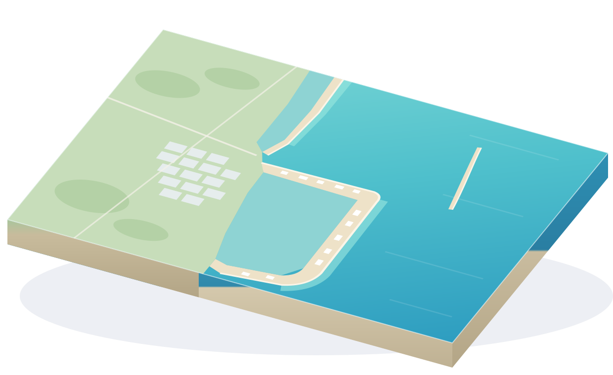

Cámaras de hoteles frente al mar, verificadas por IA cada 15 minutos. Solo ves playas limpias.
No encontramos playas limpias con “”. Prueba con otro hotel o zona.
01 — La costa
De Isla Blanca a Punta Nizuc. Cada pin es una cámara de hotel cuya lectura más reciente no detectó sargazo.

Punta Esmeralda Azul Caribe Playa Turquesa Brisa Maya Casa Coral Sol del Mar Costa Nácar MAR CARIBE →02 — Cómo funciona
Si la IA detecta sargazo, la cámara se oculta hasta la siguiente lectura limpia. Nunca verás una playa con sargazo.
Las cámaras de los hoteles frente al mar transmiten su vista de la playa.
SAiMON VISION revisa cada imagen y estima si hay sargazo en la arena o en el agua.
Se publican únicamente las cámaras cuya lectura más reciente no detecta sargazo.
Hoteles participantes
Para hoteles
03 — Preguntas
Es una macroalga que flota en el mar y llega a las costas del Caribe mexicano en ciertas temporadas. Cuando se acumula en la orilla cambia el color del agua y de la arena.
Cada 15 minutos. La hora de la última lectura aparece arriba a la derecha y en cada tarjeta de cámara.
Puede que su lectura más reciente haya detectado sargazo, que la cámara esté en revisión o que el hotel aún no participe. Vuelve a revisar después de la siguiente lectura.
No. Las lecturas son automatizadas y orientativas; las condiciones pueden cambiar entre una lectura y otra. Verifica siempre en sitio.